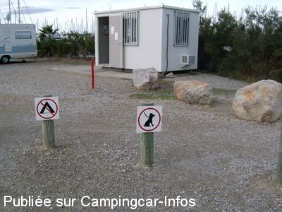

ASN = Aire de services avec stationnement nuit possible de :
GRUISSAN
(N° 670)
Accès/adresse :
Avenue des Quatre Vents
Rive droite
Aire des 4 Vents
11430 GRUISSAN
Rive droite
Aire des 4 Vents
11430 GRUISSAN
Latitude : (Nord) 43.10416° Décimaux ou 43° 6′ 14′′
Longitude : (Est) 3.09961° Décimaux ou 3° 5′ 58′′
Tarif : 2016
Stationnement, services du 12/02 au 29/11 : 9 à 9,75 €
Type de borne : Plateforme
Services :


Douche
Autres informations :
Ouvert du 20/02 au 29/10
Stationnement toléré hors période d'ouverture
120 emplacements surveillés 7 h à 22 h, hors saison 7 h à 20 h
Tel : +33(0)468 752 121
contact@ville-gruissan.fr
http://www.audetourisme.com/diffusio/fr/ou-dormir/aires-de-camping-car/gruissan/aire-de-services-pour-camping-cars-aire-des-quatre-vents_TFOACCAMLAR01100000.php
Le 22/04/2014 par jérôme
Le 30/07/2013 par claire70
Le 04/08/2010 par Plexat
Le 04/08/2010 par Plexat

Le 23/11/2009 par cobemalo33
de
l aveyronnais
le 11/01/2016 :
pratiquant l aire régulièrement depuis 10 ans .celle ci est très calme et agréable mais la municipalité pourrait remettre un peu de castine cela serait bien car le prix a bien augmenté et les trous de la pite aussi!!!
pratiquant l aire régulièrement depuis 10 ans .celle ci est très calme et agréable mais la municipalité pourrait remettre un peu de castine cela serait bien car le prix a bien augmenté et les trous de la pite aussi!!!
de
Michel
le 26/09/2015 :
de passage début septembre, difficultés pour trouver un emplacement car plusieurs secteurs de l'aire sont rendus impraticables à cause des pluies. Dommage, car l'endroit est sympathique.
de passage début septembre, difficultés pour trouver un emplacement car plusieurs secteurs de l'aire sont rendus impraticables à cause des pluies. Dommage, car l'endroit est sympathique.
de
villeroy
le 18/05/2015 :
de passage a gruissan le 4 mai 2015 sur cette air un régal le personnel super sympa le centre ville est 10 mn a pied de très bonne balade a vélo un marche 3 fois par semaine nous somme rester deux semaines nous reviendrons.
de passage a gruissan le 4 mai 2015 sur cette air un régal le personnel super sympa le centre ville est 10 mn a pied de très bonne balade a vélo un marche 3 fois par semaine nous somme rester deux semaines nous reviendrons.
de
Guy et Jacqueline
le 19/03/2015 :
Aire ouverte et gratuite pendant 4 mois l'hiver l'eau à volonté , c'est la seule aire gratuite l'hiver dans cette région , merci à la collectivité cela fait 2 hivers que nous venons et nous reviendrons .
Aire ouverte et gratuite pendant 4 mois l'hiver l'eau à volonté , c'est la seule aire gratuite l'hiver dans cette région , merci à la collectivité cela fait 2 hivers que nous venons et nous reviendrons .
de
Laurent
le 27/02/2015 :
Je confirme le commentaire d'Anémone 66 9 euros pour être dans la boue à chaque fois qu'il pleut,c'est exagéré,alors qu'à Narbonne pour le même prix on a l'électricité, un sol goudronné, et des espaces assez larges entre camping cars.
Je confirme le commentaire d'Anémone 66 9 euros pour être dans la boue à chaque fois qu'il pleut,c'est exagéré,alors qu'à Narbonne pour le même prix on a l'électricité, un sol goudronné, et des espaces assez larges entre camping cars.
de
Anemone 66
le 21/02/2015 :
De passage à Gruissan, nous nous sommes arretés à nouveau sur l'aire des 4 vents qui reste fidèle à elle même sans nouvel aménagement . Les sanitaires sont fermés puisque l'aire n'est pas officiellement ouverte . Ouverture prévue le 27 février avec augmentation du tarif 9 Euros. Nous trouvons que cela commence à faire cher pour avoir le droit de poser les roues, surtout sans électricité, et ceci sans compter la gadoue s'il vient à pleuvoir comme aujourd'hui.
De passage à Gruissan, nous nous sommes arretés à nouveau sur l'aire des 4 vents qui reste fidèle à elle même sans nouvel aménagement . Les sanitaires sont fermés puisque l'aire n'est pas officiellement ouverte . Ouverture prévue le 27 février avec augmentation du tarif 9 Euros. Nous trouvons que cela commence à faire cher pour avoir le droit de poser les roues, surtout sans électricité, et ceci sans compter la gadoue s'il vient à pleuvoir comme aujourd'hui.
de
Brams
le 18/02/2015 :
De passage mi Février. Eau et vidange fonctionnent et tout est gratuit jusqu'au 1 Mars
De passage mi Février. Eau et vidange fonctionnent et tout est gratuit jusqu'au 1 Mars
de
GCL
le 20/10/2014 :
Octobre 2014
Aire calme, belles promenades, personnel aimable, bcp de CC mais il y a bcp d´espace. Ns y reviendrons.
Octobre 2014
Aire calme, belles promenades, personnel aimable, bcp de CC mais il y a bcp d´espace. Ns y reviendrons.
de
André
le 16/08/2014 :
C'est vrai que nous sommes en août mais toutes les aires de Gruissan sont complètes mais pour seulement les services il est demandé 8,50€ c'est du racket
C'est vrai que nous sommes en août mais toutes les aires de Gruissan sont complètes mais pour seulement les services il est demandé 8,50€ c'est du racket
de
D & N Auger
le 06/10/2013 :
Tous les ans nous nous retrouvons sur cette aire avec des amis pour minimum 5 jours.Sanitaires très propres
eau des douches bien chaude,endroit calme et bien placé ,personnel toujours aussi accueillant.Tarif correct. Quoi demander de plus ? sinon que cette aire
continue d'exister longtemps. Beaucoup de communes
devrait prendre exemple. MERCI à GRUISSAN.
Tous les ans nous nous retrouvons sur cette aire avec des amis pour minimum 5 jours.Sanitaires très propres
eau des douches bien chaude,endroit calme et bien placé ,personnel toujours aussi accueillant.Tarif correct. Quoi demander de plus ? sinon que cette aire
continue d'exister longtemps. Beaucoup de communes
devrait prendre exemple. MERCI à GRUISSAN.
de
coco
le 28/08/2013 :
nous en arrivons, cette aire est bien, mais pas d'ombre, il y a 2 douches mais un seul petit reproche: 1 seul petit porte manteau pour y accrocher ses affaires, il faut alors jongler entre serviette et habits. (une tablette serait la bienvenue)et pas d'anarchie dans cette aire, obligation de bien se garer.
sinon, nous avons bien dormi, j'y retournerai.
nous en arrivons, cette aire est bien, mais pas d'ombre, il y a 2 douches mais un seul petit reproche: 1 seul petit porte manteau pour y accrocher ses affaires, il faut alors jongler entre serviette et habits. (une tablette serait la bienvenue)et pas d'anarchie dans cette aire, obligation de bien se garer.
sinon, nous avons bien dormi, j'y retournerai.
de
JCL
le 31/05/2013 :
§ De passage fin mai, nous y sommes restés deux nuits, certes à 8,5O avec les services. Dejà chargée en cette saison je n'ose imaginer l'été ici. De belles balades à pied ou à vélo sur le secteur.
§ De passage fin mai, nous y sommes restés deux nuits, certes à 8,5O avec les services. Dejà chargée en cette saison je n'ose imaginer l'été ici. De belles balades à pied ou à vélo sur le secteur.
de
Rapido 64
le 05/08/2012 :
pour y etre passé en avril 2012 aire tres bien situee,bien sympa, pour se balader a pied ou en velo,pour donner reponse au commentaire precedent en va vous faire des aires de cc en front de mer et gratuit si vous voulez.Vive les eternelles insatisfait... Un grand merci a la commune
pour y etre passé en avril 2012 aire tres bien situee,bien sympa, pour se balader a pied ou en velo,pour donner reponse au commentaire precedent en va vous faire des aires de cc en front de mer et gratuit si vous voulez.Vive les eternelles insatisfait... Un grand merci a la commune